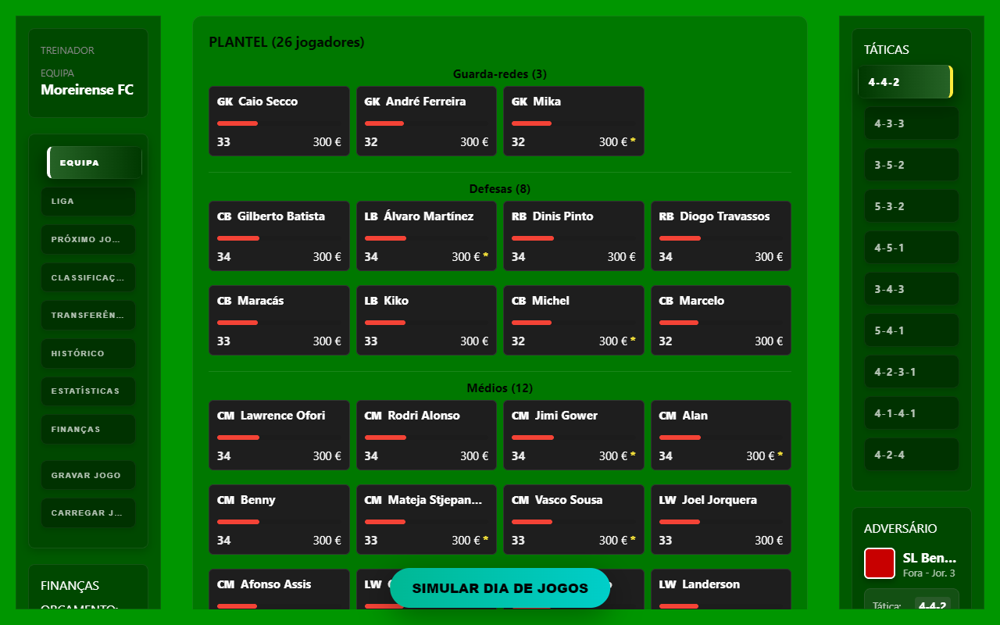
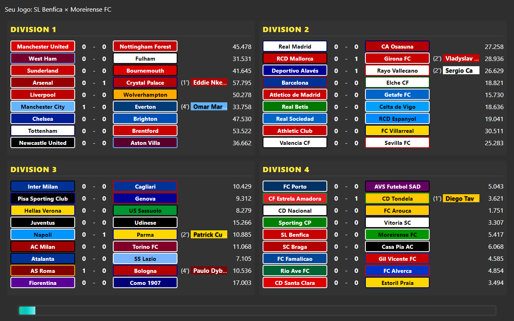
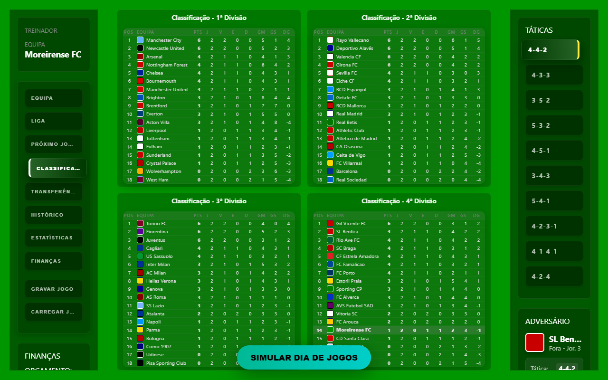
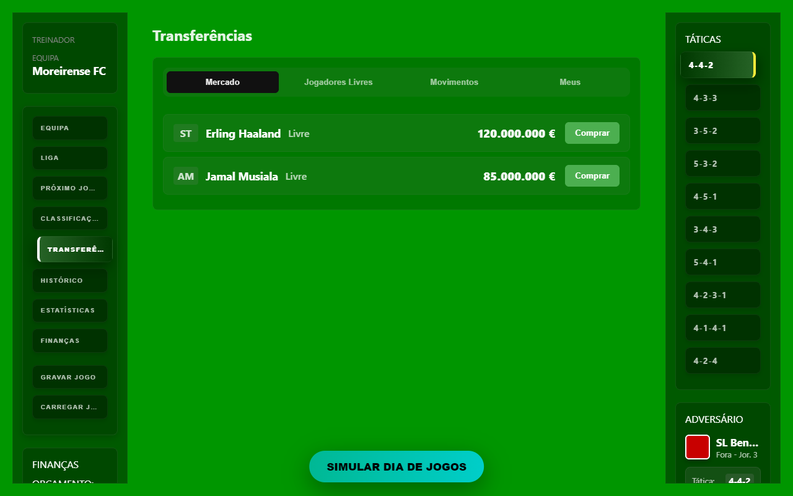
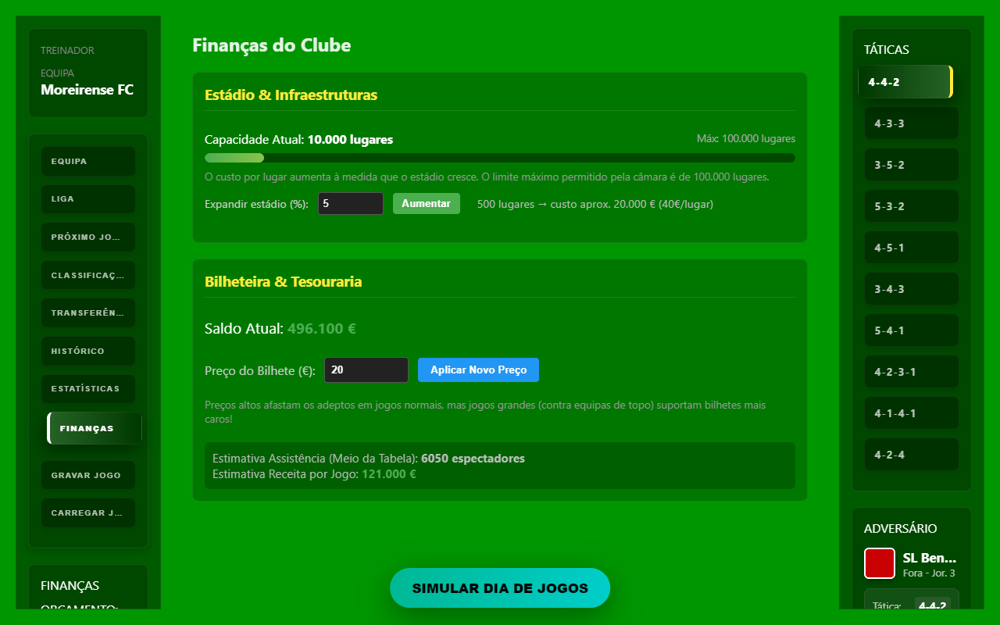

02
Squad management
Manage the squad and make decisions around players and lineups.
Project 01 · Game · AI-assisted development
A football management game built as an experiment in what happens when a Product Manager works with AI as the development partner.

01 / Why FootLab?
FootLab started as an experiment.
I wanted to explore what it would be like to build a complete product with AI taking the role of developer, while I focused on the product side: defining the idea, explaining what I wanted, making decisions and iterating on the result.
I chose to build a football management game for a simple reason: nostalgia.
Some of the first football games I played were management games, particularly Elifoot 2. They were simple, but they created a surprisingly strong feeling of managing a team, making decisions and watching a season unfold.
FootLab was my way of taking that memory and using it as the starting point for an experiment with today's AI tools.
02 / The experiment
The product direction, rules, systems and priorities came from the product side: deciding what should exist and how it should behave.
AI translated requirements into code, implemented systems, fixed issues and helped restructure parts of the project as it evolved.
The process became a continuous loop of describing a change, reviewing the result, finding what was wrong and deciding what should happen next.
03 / My role
I didn't approach FootLab as a traditional developer.
My role was primarily to define the product: what I wanted to build, how it should behave, what systems it needed, what should change and what should be improved.
This became an experiment in a different way of building software — where the distance between having an idea and having a working prototype becomes much smaller.
04 / Inside the game
FootLab grew from a simple idea into a browser-style football management simulation with multiple interconnected systems.
The match engine runs minute-by-minute simulations, with teams, tactics, lineups and match events feeding into the result.

Manage the squad and make decisions around players and lineups.

Track the season, standings and promotion or relegation between divisions.

Recruit players and work with transfer and free-agent systems.

Follow the financial side of running a football club.
05 / Technical overview
The current project is structured as a browser-style simulation, with the source code centralized under src/.
Match-day loop, season transitions, promotion/relegation and minute-by-minute match logic.
Salaries, transfers, free agents, team generation and player skill evolution.
Real roster data is loaded and normalized through the project's data layer.
Modular UI under src/ui/, automated tests, build tooling and visual regression screenshots.
06 / What I learned
FootLab made the experiment concrete. It showed how much of the development loop can happen through product decisions, clear communication and iteration when AI is capable of translating those decisions into working code.
It also made the limits visible. AI can implement quickly, but it still needs direction, context, review and someone willing to notice when the result is technically valid but product-wise wrong.
That is what made the project valuable to me: it wasn't just about getting a football game to run. It was about understanding a different relationship between product thinking and software development.
07 / Current status
FootLab is still a personal development project. The goal remains exploration rather than commercial release.
Back to projects ↗